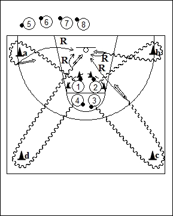

Catégorie : DRIBBLE (Dr-005)
Déroulement
- Les joueurs sont par groupes de quatre. Tous possèdent un ballon.
- Les quatre premiers joueurs dribblent dans le cercle (complété avec des cônes). Ils essaient de chasser le ballon des autres; il s’agit donc là d’un dribble bas de protection. Au signal du Coach, les quatre joueurs sprintent en dribble (speed dribble) et suivent les instructions données au préalable :
- le joueur 1 contourne le cône a et prend un jump
shoot;
- le joueur 2 contourne le cône b et réalise un lay-up;
- le joueur 3 contourne le cône c et effectue un jump
shoot;
- le joueur 4 contourne le cône d et fait un lay-up.
- Chaque joueur effectue son rebond et sort avec son ballon. Le deuxième groupe de quatre débute alors le drill.
Coaching points
- Insister sur la vitesse du démarrage pour prendre un shoot dès que le Coach donne le signal.
- Passer très vite du dribble bas au dribble de contre-attaque.